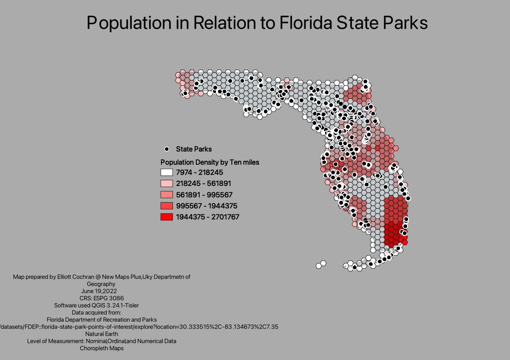

Population in Reference to Florida State Parks

Link to full screen image.
Authored by Elliott Cochran
Map prepared by Elliott Cochran @ New Maps Plus, Uky Department of Geography
June 19, 2022
CRS: ESPG 3086; Software used QGIS 3.24.1-Tisler
Data acquired from:
Level of Measurement: Nominal, Ordinal, and Numerical Data
Choropleth Maps
This map shows the location of state parks in Florida, as indicated by points. The population density is displayed in hexgrids. The purpose of this map is to .....(could be on sentence here, doesn't need to be as extensive as the readme description). (If a public repository, you could include a link to the readme in this section too). This analysis helps show that ....(a sentence or two about key findings from the map)